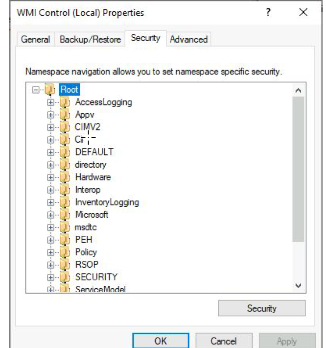

WMI
what is WMI
- service name : winmgmt
- windows management instrumentation
- winrm is using wmi as backend
WMI namespaces and classes
- check for wmi status
- Namespace
- WMI is divided into a directory-style hierarchy, the \root container, with other
directories under \root. These " directory paths " are called namespaces.

- Classes:
- The WMI class name eg: win32_process is a starting point for any WMI action
- We always need to know a Class Name and the Namespace where it is located.
- Get-WmiObject -List -class win32*| more // all classes that start with wwin32
- methods
- each classes has methods that can be executed
- Querry : a WMI querry language statement to run
- Commands
- Get-WmiObject -Class __Namespace -Namespace Root | sort name | ft name, path // get namespecs
- Get-WmiObject win32_process | Select Name, Processid, WorkingSetSize // get all runing processes